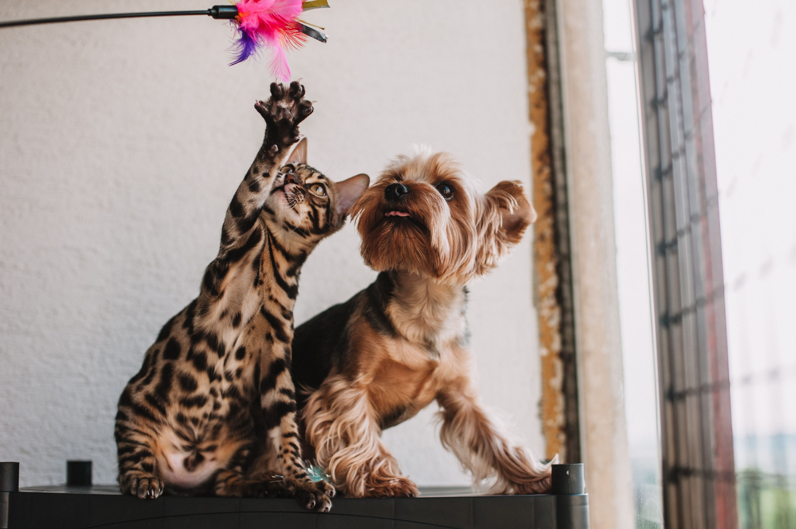
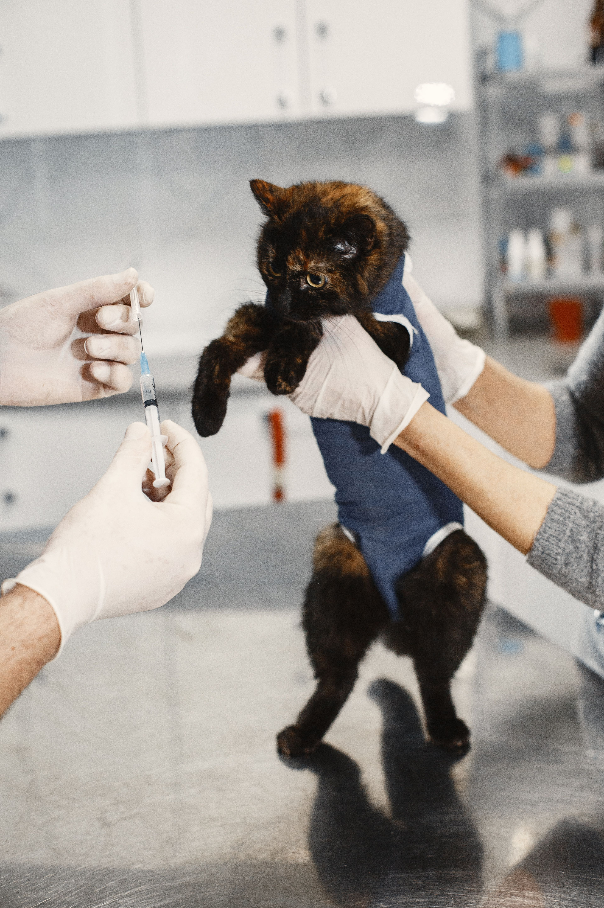
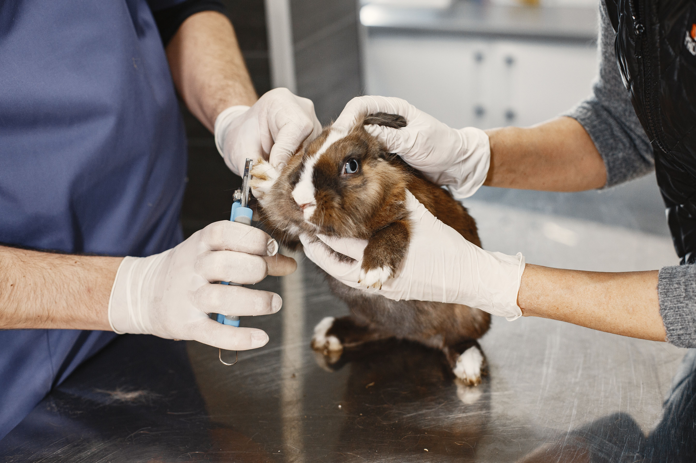
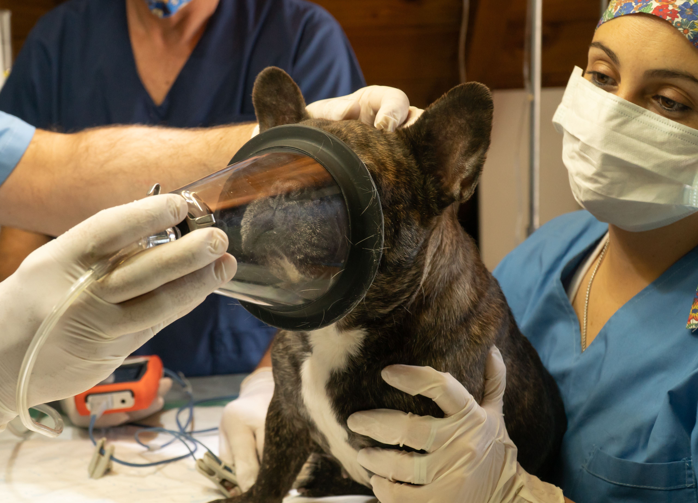
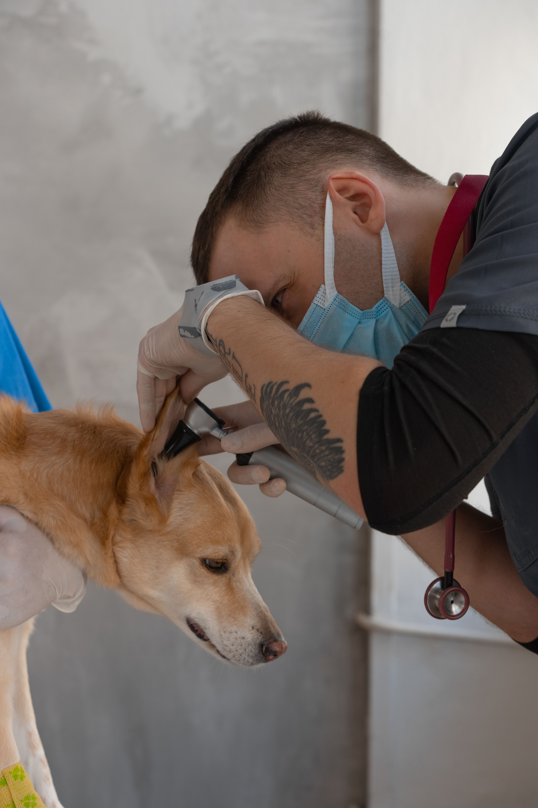
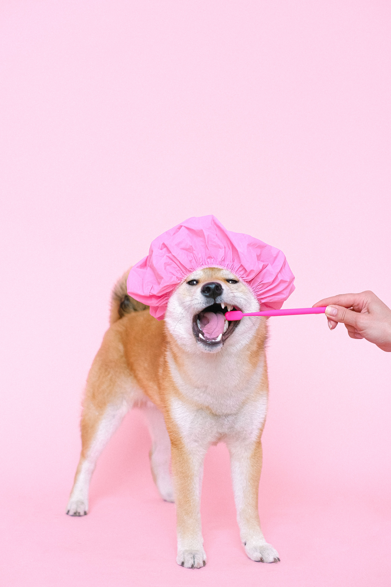
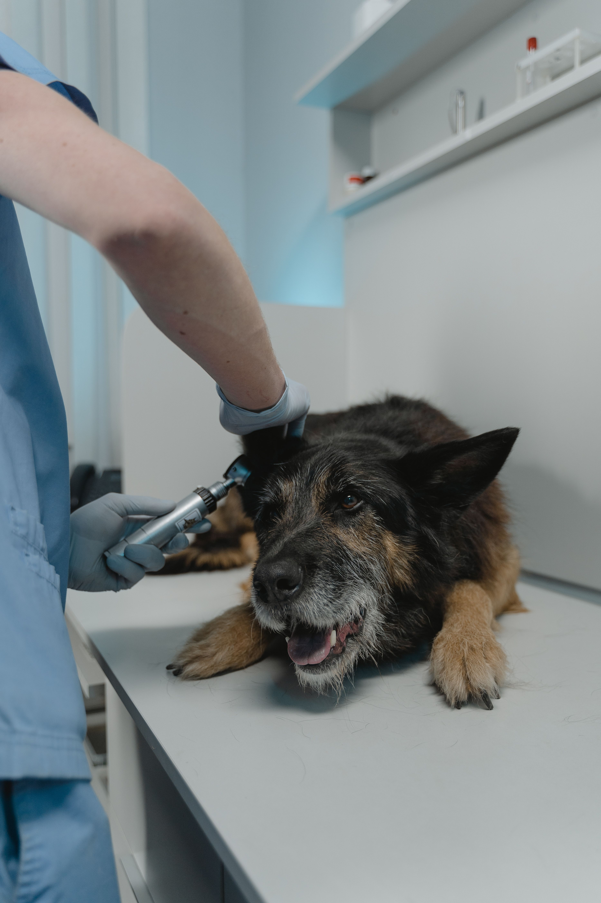

"La atención en VetSalud es excepcional. Salvaron a mi perro en una emergencia con una dedicación y cariño incomparables."

La salud de su mascota, nuestra máxima prioridad.
Bienvenidos a la Clínica Veterinaria VetSalud, donde la ciencia médica de vanguardia se une a la compasión más profunda. Nos dedicamos a garantizar que su perro o gato disfrute de una vida larga, feliz y saludable. Desde vacunas esenciales para cachorros y gatitos hasta cirugías complejas, nuestro equipo ofrece servicios veterinarios de primera categoría.
Solicite una citaServicios esenciales adaptados a las necesidades de su acompañante.
Nos especializamos en la gestión proactiva de la salud animal. Descubra por qué nos destacamos por nuestros chequeos rutinarios, análisis de laboratorio precisos en nuestras instalaciones y cirugía experta de tejidos blandos.

Diagnóstico avanzado

Recorte de uñas cómodos
¿Por qué son importantes las dosis de refuerzo?

Exámenes de bienestar y atención preventiva

Cuidado reproductivo y esterilización responsable

Procedimientos quirúrgicos y seguridad anestésica

Cuidado y limpieza dental profesional

Microchips de identificación y pruebas diagnósticas
Por qué las familias confían en VetSalud
Los dueños de mascotas eligen VetSalud porque combinamos diagnósticos avanzados internos con un trato cálido e individualizado, tratando a cada mascota como si fuera de la familia. Con una comunicación empática y un equipo reconocido por su excelencia, la clínica ofrece atención moderna y eficiente sin perder nunca la calidez humana.
Más información

Recursos del propietario
Mantente informado y empoderado con el blog de la Clínica Veterinaria VetSalud, donde compartimos consejos prácticos para que tu mascota se mantenga sana, feliz y libre de estrés en cada etapa de su vida. Cada publicación está diseñada para ayudarte a tomar decisiones seguras y compasivas para tu compañero de cuatro patas.
Leer másTestimonios de Familias Felices
Conoce las experiencias reales de quienes confían la vida de sus mascotas en nuestras manos.
"El equipo médico es muy profesional y empático. Las instalaciones están impecables y mi gata nunca se estresa durante sus consultas."
Valeria Gómez
Dueña de Luna (Gata Persa)"Llevo más de 4 años confiando la salud de mis mascotas a VetSalud. Los mejores veterinarios y precios muy justos."
Andrés Morales
Dueño de Rocky y MiaPreguntas Frecuentes
Resolvemos las dudas más comunes sobre nuestros servicios y procedimientos.
No, nuestros servicios cuentan con un horario de Lunes a Sabado desde las 8:00 AM a 6:00 PM.
Te recomendamos traer la cartilla de vacunación previa de tu mascota, su historial clínico anterior (si aplica) y un documento de identidad del propietario.
Puedes agendar directamente haciendo clic en cualquiera de nuestras tarjetas de servicios o en el botón "Solicite una cita".
Sí, contamos con planes mensuales y anuales de bienestar que incluyen consultas ilimitadas, vacunas, desparasitaciones periódicas y descuentos especiales.
Totalmente. Todas nuestras cirugías cuentan con monitoreo multiparamétrico avanzado continuo y un anestesiólogo veterinario dedicado durante todo el procedimiento.